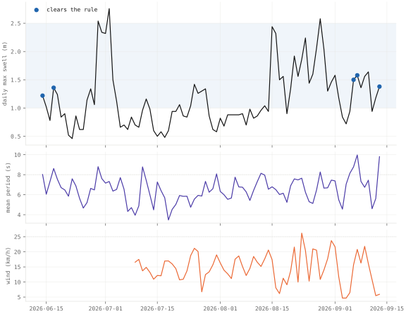

Note · Forecast verification · Ericeira swell and Prague weather, September 2026
Forecast verification: protocol
A protocol, with no results yet, for scoring seven-day forecasts by lead day: three wave models at three Portuguese surf spots, and four weather models against two Prague stations.
- surf forecasts stored
- 15 issue dates, 14–28 September 2026, none missing · administrative count
- Prague forecasts stored
- 9 issue dates, 15 and 21–28 September 2026 · administrative count
- pairs at lead 1, per model
- 13 · 7 surf · Prague; nothing is scored under 14 · administrative count
- surfable days at Ericeira
- 15 of 106 14 June – 27 September 2026, from the analysis · administrative count
Overwhelmed? Here's the short version
- Surf forecasts are checked against a wave model's own analysis, not a buoy, so surf scores are expected to look better than they are; Prague forecasts are checked against two ČHMÚ stations.
- Six dated predictions exist, each with a rule for reading it, and none can be read before 30 pairs span eight weeks, in November at the earliest.
- Until then, no interval on the live pages should be read; most of the intervals the rules need are not coded yet.
- Three faults in the verifiers were corrected on 29 September 2026, before any lead that a claim is read on had passed the gate. This page shows no forecast skill yet.
Photo: Lenart Lipovšek · CC0, toned
What is compared, and against what
Both instruments store a seven-day forecast every day and later pair it with what the target day brought, one pair per place, model, lead day (how many days ahead of the target the forecast was issued, 0–6) and date. The surf instrument takes swell and wave height from three wave models (Météo-France MFWAM, DWD GWAM, DWD EWAM) and 10 m wind from Open-Meteo's Forecast API, one wind series shared by all three, for Ericeira, Peniche and Sagres, aggregated over daylight, 06:00–20:00 UTC1. Its truth is the MFWAM analysis of the target day, fetched the next day: the model's own best reconstruction of that day's sea state, constrained by observations, not a measurement. The Portuguese buoys are released by the Instituto Hidrográfico only on request, and the European in-situ portal listed no Portuguese wave platform on 14 September 202623. So MFWAM is scored against its own analysis (self-verification), GWAM and EWAM against a related model, and every score is expected to read better than it would against a buoy; no buoy comparison exists to show by how much. A day is surfable when its maximum swell height is 1.0–2.5 m, its mean period at least 8 s, and the wind at most 25 km/h or offshore (east ± 60°). The design note of 14 September 2026 gave the period as 9 s; the code committed with it, and every published number, used 8 s, and 9 s is kept as a robustness variant. The live page turns the probability of such a day into a booking rule4, treating each day of a trip as surfable with the same probability, which is this page's own simplification.
The Prague instrument takes hourly temperature and precipitation from Open-Meteo's best_match, ICON, ECMWF IFS 0.25° and GFS at two ČHMÚ stations, Praha Ruzyně (364 m) and Praha Klementinum (191 m) 15. The stations report daily extremes for the 24 hours to 20:00 UTC and precipitation for the 24 hours to 06:00 UTC, and the collector aggregates the hourly forecast over exactly those windows. No lapse-rate or urban correction is applied between station and grid cell, which matters most at Klementinum. best_match resolves to ICON here and is kept only as its own column. The climatology is each station's 1991–2020 record, ±15 days around the day of year.
Both jobs are scheduled for the morning, surf at 06:10 and Prague at 06:40 UTC, but the stored forecasts were committed between about 08:00 and 14:30 UTC, mostly between 11:00 and 14:00. The forecast files record only the issue date, not the fetch time, so the commit time is the only proxy. In practice, then, a forecast is usually issued around midday: most of a lead-0 day is already past, and lead-1 and later forecasts come from later model runs than a reader at 06:00 UTC would see, which can make them look slightly better than they would for that reader.
Scores, baselines and corrections
For each set of pairs the verifier computes the mean absolute error (MAE, the average size of the miss), the bias (the average signed miss) and the RMSE (which weights large misses more) of the daily maximum swell height or temperature. Alongside, the surf verifier computes period errors and Spearman's rank correlation (whether the forecast orders the days the way the truth does), and the Prague verifier computes minimum temperature, precipitation and the temperature MAE of the two baselines. The baselines are climatology (the usual value for that time of year) and persistence (the target day will be like the last day known at issue). A binary event, a surfable day or at least 1 mm of rain, gives the probability of detection (the share of events that were forecast) and the false-alarm ratio (the share of forecast events that did not happen). The share \(f_i\) of models calling the event is scored against the outcome \(o_i\) with the Brier score, and its skill against climatology and persistence67:
For surf, climatology is a single number: the share of surfable days in the whole back-filled analysis from 14 June, which includes the target days being scored and is weighted towards summer. It is not a seasonal reference, and skill against it may read too high for autumn targets. For Prague the shares come from the 1991–2020 record above. For surf, the event share is a vote of three at leads 0–3 and of MFWAM and GWAM only at leads 4–6, where EWAM returns nothing, so it can then take only the values 0, ½ and 1.
Intervals come from a block bootstrap by ISO week (500 resamples): whole weeks are resampled, because neighbouring days are not independent. The code computes them for only three statistics so far: the MAE of daily maximum swell height and the chance a forecast surfable day is surfable (surf), and the daily-maximum temperature MAE (Prague). A lead with fewer than 14 pairs (the gate) shows no number, and under 30 a number is marked descriptive, meaning shown but not read.
Three faults were corrected in surf/verify.py and weather/verify.py on 29 September 2026; the twelve existing tests still pass, but none of them tests the three corrections directly, and the live pages pick the change up at their next run. Persistence had used values not yet known at issue time (the surf analysis of the issue day; in Prague the observation of the day before the target, which at leads of 2 and more lies after the issue); it is now the value of the day before the issue, at every lead. Precipitation is no longer scored at lead 0, because the rain window closes at 06:00 UTC, before the run; lead-0 temperature, whose window is largely past by the time the job actually runs, is flagged. The Prague ensemble now counts the three distinct models, not ICON twice. A fourth rule is not yet in the code: an interval is read only once its pairs span eight ISO weeks, because a block bootstrap over two or three weeks is degenerate. Until it is coded, with a synthetic test series longer than eight weeks, no interval on either live page is read. Nor are the other quantities the reading rules below need yet in the code: intervals on the Brier skill score, on bias, on Spearman's ρ and on the share of positive errors, the shares of days with a model spread of at most 0.3 m or above 0.5 m, the paired MAE differences between models, and the MAE difference between the two Prague stations. Until they are coded, only the MAE part of Surf 2 and the Ruzyně MAE part of Prague 1 can be read from the live output; the rest of each claim stays inconclusive.
State on 28 September 2026 and reading rules
The surf collector has missed no morning. At lead 1 each spot and model has 13 pairs, at lead 6 it has 8, and EWAM, which returns nothing beyond lead 3, has 43 % empty cells. Lead 0 has passed the gate but is not read, since a lead-0 forecast is nearly its own truth. The Ericeira base rate is back-filled analysis from 14 June, not stored forecasts: 15 of 106 days were surfable (14.2 %), against 5 of the first 92 (fig. 1), and 8.5 % to 25.5 % under a period threshold of 9 s or 7 s. The Prague collector missed 16–20 September, five pairs lost at every lead, and has 7 pairs at lead 1 and 2 at lead 6. Without further gaps, 14 pairs are reached at surf lead 6 on 4 October and at Prague leads 1 and 6 on 5 and 10 October, 30 pairs on 20, 21 and 26 October, and eight weeks in the first half of November.

surf/data/analysis.json, snapshot of 14 September 2026.The surf expectations were committed at f815c6b on 14 September 2026, 22:25, and the Prague predictions at a51ec90 on 15 September 2026, 15:29 (CEST), each before its instrument's first pair; commit times are self-reported, and neither commit is an independent timestamp8. The reading rules were added on 29 September 2026; in the data of 28 September no lead concerned had passed the gate. A claim is read at 30 pairs over eight ISO weeks: supported when the 95 % bootstrap interval lies wholly on the predicted side of the threshold, not supported when it lies wholly on the other side, inconclusive otherwise, and inconclusive too while the interval it needs is not coded. Until 3 October 2026 a point estimate on the predicted side counted as support; the rule was made symmetric before any claim could be read. A claim of no skill, such as "about zero by lead 6" in Prague 2, can be found not supported but never supported, because no margin of equivalence was registered. MFWAM's part of each surf claim is self-verification: it is reported separately, and the cross-model reading rests on GWAM and, where it has data, EWAM. The corrected persistence is weaker at long leads than the baseline of 15 September, which makes the second half of Prague 2 easier to meet.
| claim, as dated | reading rule (29 September 2026, revised 3 October 2026) |
|---|---|
| Surf 1 (14 September): at lead 1–2 the three models agree on swell height to within 0.3 m on most days, and the rank correlation with the analysis is above 0.9. | Pooled over the three spots, the three-model spread is at most 0.3 m on more than 50 % of target days at leads 1 and 2, and Spearman's ρ exceeds 0.9 for GWAM and EWAM at both leads (MFWAM, against its own analysis, reported separately). |
| Surf 2: at lead 5–6 the MAE of daily maximum swell height exceeds 0.5 m, and the models disagree by more than 0.5 m on at least a third of days. | MAE above 0.5 m for GWAM at leads 5 and 6 (MFWAM reported separately), and a spread above 0.5 m on at least 33 % of target days, pooled over spots; at these leads the spread is between MFWAM and GWAM only. |
| Surf 3: at long leads the models over-forecast swell height more often than they under-forecast it. | More than 50 % of GWAM's swell errors at leads 5 and 6 are positive, pooled over spots (MFWAM reported separately). |
| Prague 1 (15 September): lead-1 daily-maximum MAE between 1.0 and 1.6 °C at Ruzyně, larger at Klementinum, and a negative Klementinum bias. | For each of ICON, ECMWF and GFS: the Ruzyně interval lies within 1.0–1.6 °C, the Klementinum MAE exceeds the Ruzyně MAE, and the Klementinum bias is below 0. |
| Prague 2: rain skill against climatology clearly positive at leads 1–3 and about zero by lead 6; persistence harder than climatology at lead 1 and easier from lead 3. | BSS against climatology with its interval above 0 at leads 1–3; at lead 6, not supported if the interval lies wholly above or wholly below 0, otherwise inconclusive; Brier score of persistence below that of climatology at lead 1 and above it at leads 3–6. |
| Prague 3: ECMWF has the lowest temperature MAE at leads 3–6 but not at lead 1, where ICON is at least as good. | The paired MAE difference of ECMWF minus ICON and minus GFS is below 0 at leads 3–6, and ICON minus ECMWF is at most 0 at lead 1. |
References
- Open-Meteo (2026). Marine Weather API (MFWAM, GWAM, EWAM) and Forecast API (
best_match,icon_seamless,ecmwf_ifs025,gfs_seamless). open-meteo.com/en/docs/marine-weather-api, open-meteo.com/en/docs. Accessed daily from 14 September 2026. - Instituto Hidrográfico (2026). Acesso a dados. hidrografico.pt. Accessed 14 September 2026.
- EMODnet Physics (2026). ERDDAP search for Portuguese wave platforms, no result. erddap.emodnet-physics.eu. Accessed 14 September 2026.
- Richardson, D. S. (2000). Skill and relative economic value of the ECMWF ensemble prediction system. Quarterly Journal of the Royal Meteorological Society 126(563), 649–667. doi.org/10.1002/qj.49712656313. Accessed 29 September 2026.
- Czech Hydrometeorological Institute (2026). Climatological open data, daily values per station (
recent/data/daily/dly-{WSI}-{YYYYMM}.json; TMA, TMI at 20:00 UTC, SRA at 06:00 UTC; stations 0-20000-0-11518 Praha Ruzyně and 0-203-0-11514 Praha Klementinum; historical files 1991–2020). opendata.chmi.cz/meteorology/climate. Accessed daily from 15 September 2026. - Wilks, D. S. (2011). Statistical Methods in the Atmospheric Sciences, 3rd ed., ch. 8. Academic Press.
- Jolliffe, I. T. and Stephenson, D. B., eds. (2012). Forecast Verification: A Practitioner's Guide in Atmospheric Science, 2nd ed. Wiley. doi.org/10.1002/9781119960003. Accessed 29 September 2026.
- Šandová, B. (2026).
surf/andweather/, bsandova.com repository; commitsf815c6b(14 September 2026) anda51ec90(15 September 2026). github.com/sandovabarbora/bsandova.com. Accessed 29 September 2026.
Change log
- 3 October 2026: corrected after an audit. No number changed. The reading rule made symmetric: a claim is now supported only when its 95 % interval lies wholly on the predicted side, no longer when its point estimate does; the lead-6 half of Prague 2 can no longer be supported, only found not supported or left inconclusive; Prague 1 now needs the Ruzyně interval, not the point estimate, within 1.0–1.6 °C; Surf 1–3 are read on GWAM (and EWAM) with MFWAM, scored against its own analysis, reported separately. Disclosed that most intervals, spread shares and paired differences the rules need are not yet coded, so only the MAE part of Surf 2 and the Ruzyně MAE part of Prague 1 can be read; that the jobs scheduled at 06:10 and 06:40 UTC have run from about 08:00 to 14:30 UTC; that the surf climatology is an in-sample, summer-weighted share; that the vote share and spread come from two models at leads 4–6; that the design note said a period of 9 s where the code used 8 s; and that no test covers the three corrections of 29 September. Weakened "every score reads better than against a buoy" to an expectation, and "no number shown before changed" removed from the short version; the short version now says the corrections came before any lead a claim is read on had passed the gate, not before any skill number had. The reading-rule column is dated 29 September, revised 3 October 2026. Wind attributed to the Forecast API, not the wave models; the Richardson citation moved off the equal-probability simplification and given its issue and pages; Spearman's correlation attributed to the surf verifier only; terms glossed at first use; the structured-data image corrected.
- 14 September 2026: the surf protocol published as "Not worth the flight" at /texts/surf (commit
f815c6b). - 15 September 2026: the Prague protocol published as "Weather, checked." at /texts/weather (commit
a51ec90). - 29 September 2026: version 2. The two pages merged into this one. Counts moved from the 92-day snapshot (5 of 92 surfable days, 5 %; alternative rules 2 %, 19 %, 4 %, 5 %, 11 %) to the data of 28 September 2026 (15 of 106, 14.2 %; alternative rules from 8.5 % to 25.5 %); the snapshot stays as fig. 1. The Prague test count corrected from five to six. The fig. 1 caption corrected: it said the non-surfable days fail on period and otherwise on wind, but 81 of the 87 fail on period (one of them also on wind) and 6 on height alone. Persistence baseline, lead-0 precipitation and the Prague ensemble corrected in the verifiers, and the eight-week interval minimum stated. The 16–20 September gap disclosed, reading rules added to the dated predictions, and the booking arithmetic, the data-engineering section and the decision table cut; the live pages keep them. Added the short version, the metadata block and this change log.
- Checked against editorial standard v1 on 29 September 2026.